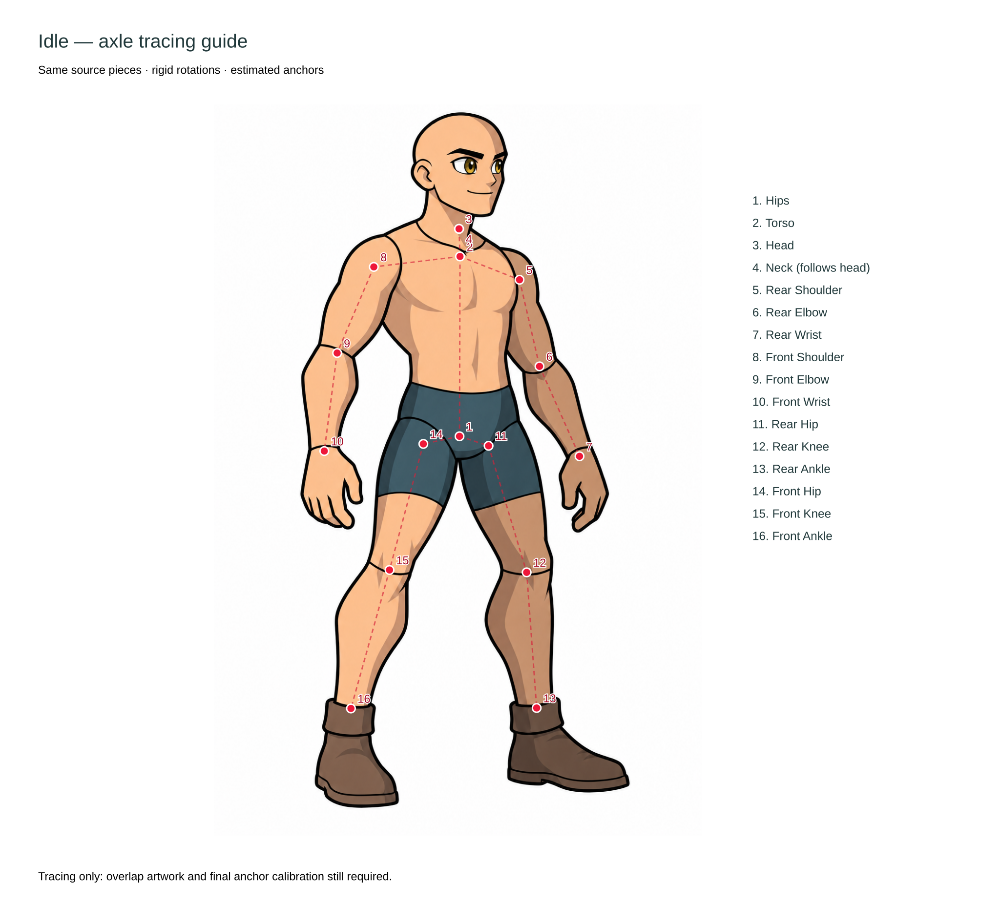
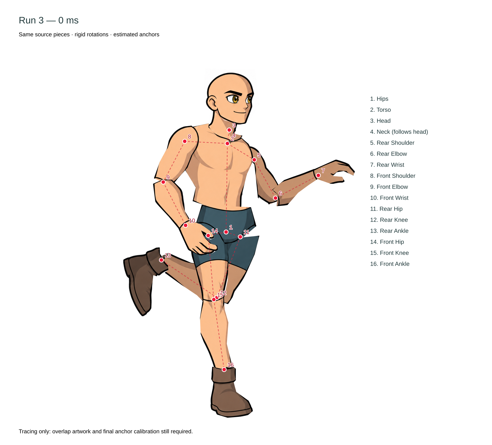
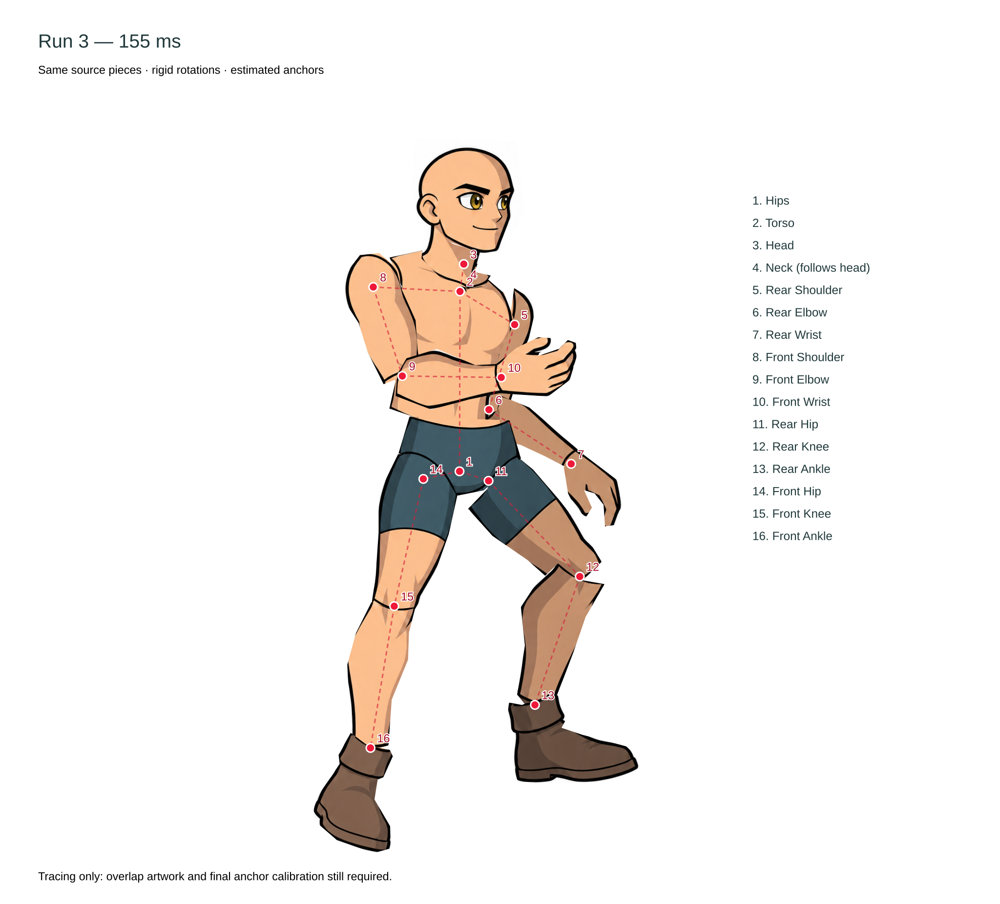
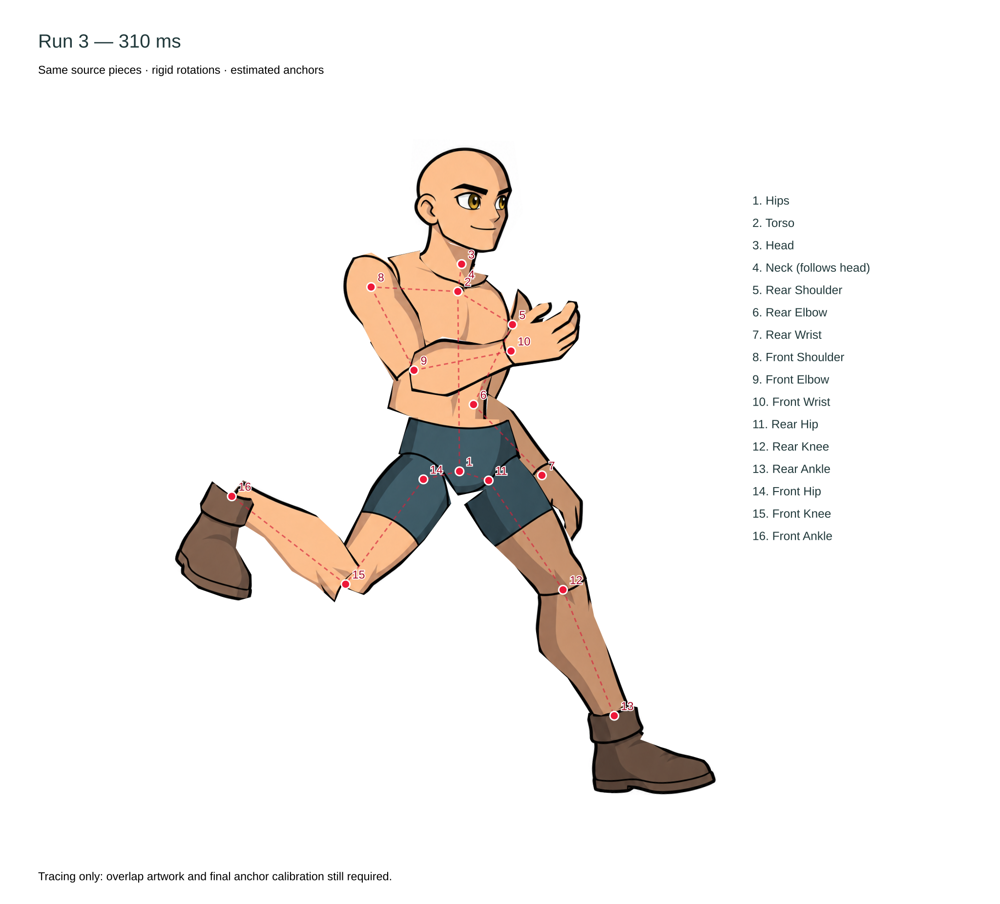
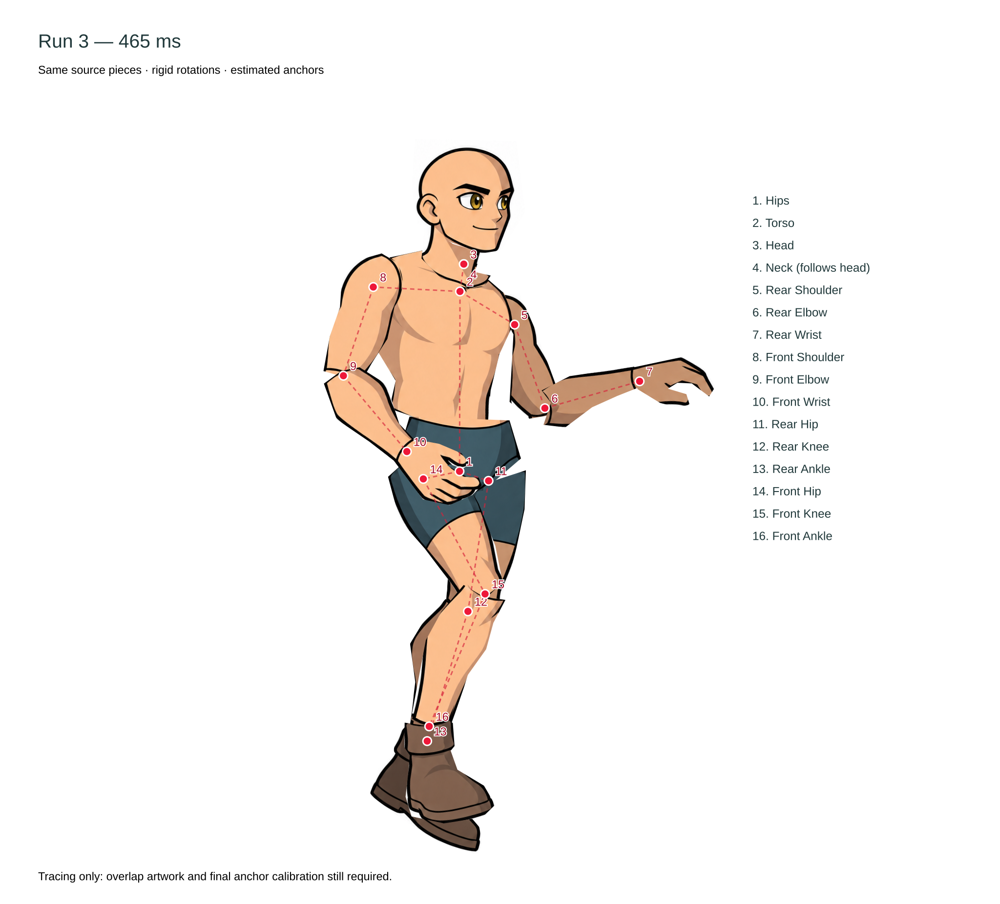

Red dots are estimated joint centers, numbered with the rig's canonical names. Run samples reuse the same source-image pieces with rigid rotation and translation; no limbs are redrawn or stretched. Cut edges and hidden joint overlap still need production fitting. Neck and head share one axle in the current rig.




